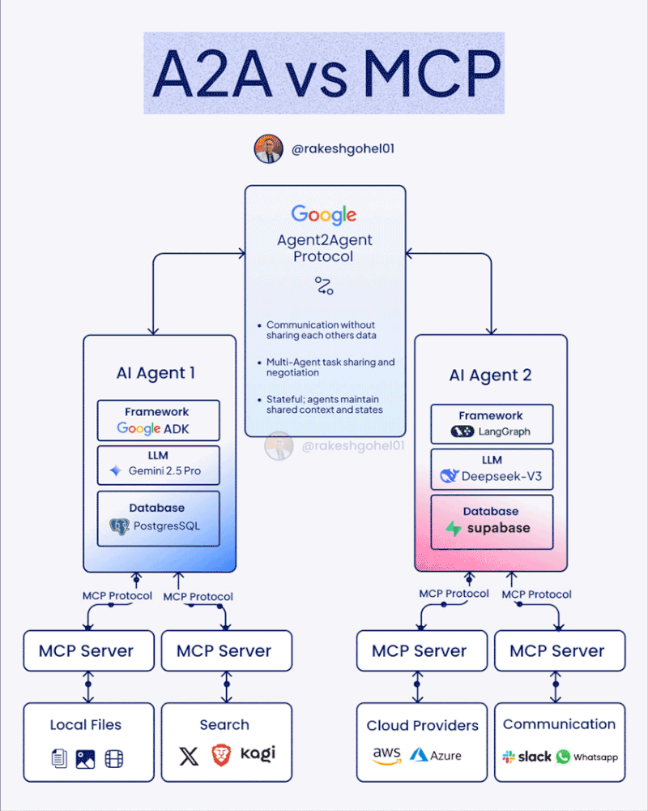
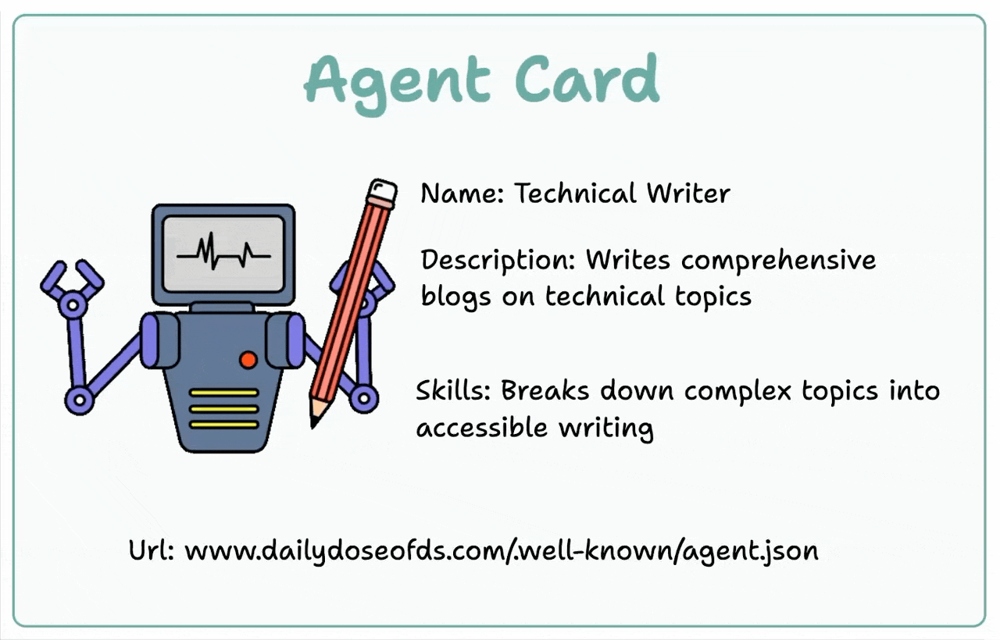

¿Qué es el protocolo A2A (Agent2Agent)?
El protocolo A2A (Agent2Agent) es un estándar abierto impulsado por Google Cloud y una amplia coalición de socios tecnológicos, diseñado para permitir la interoperabilidad y colaboración entre agentes de inteligencia artificial (AI agents), incluso si han sido desarrollados por diferentes proveedores o frameworks. A2A busca crear un ecosistema donde los agentes puedan comunicarse, compartir información y coordinar acciones de manera segura y eficiente, facilitando la automatización de flujos de trabajo complejos en entornos empresariales y más allá.
¿Por qué A2A?
A medida que las empresas y organizaciones adoptan agentes autónomos para automatizar tareas y procesos, surge la necesidad de que estos agentes puedan colaborar entre sí, independientemente de su origen o tecnología subyacente. A2A responde a esta necesidad proporcionando:
- Interoperabilidad universal: Permite que agentes de distintos proveedores y plataformas trabajen juntos sin fricciones.
- Colaboración segura: Incorpora mecanismos de autenticación y autorización de nivel empresarial.
- Flexibilidad y escalabilidad: Soporta desde tareas rápidas hasta procesos de larga duración, con actualizaciones de estado y retroalimentación en tiempo real.
- Soporte multimodal: No se limita solo a texto, sino que también puede manejar audio, video y otros tipos de datos.
- Basado en estándares existentes: Utiliza tecnologías ampliamente adoptadas como HTTP, SSE y JSON-RPC, facilitando la integración con sistemas actuales.
MCP vs A2A: ¿Cuál es la diferencia?
La diferencia principal entre MCP y A2A radica en su enfoque: MCP funciona como un "puerto USB-C" que conecta modelos de IA con sus fuentes de datos, mientras que A2A opera como un "protocolo de red" que facilita la colaboración y coordinación entre diferentes agentes de IA.

Figura 1: "Comparativa esquemática entre MCP y A2A"
¿Cómo funciona A2A?
A2A define la comunicación entre un "agente cliente" (que formula y comunica tareas) y un "agente remoto" (que ejecuta las tareas y responde). El protocolo incluye:
- Descubrimiento de capacidades: Los agentes pueden anunciar sus capacidades mediante un "Agent Card" en formato JSON, permitiendo que otros agentes identifiquen cuál es el más adecuado para una tarea.

Figura 2: "Ejemplo de Agent Card"
- Gestión de tareas: Las tareas tienen un ciclo de vida definido y pueden ser seguidas y actualizadas en tiempo real.
- Colaboración y mensajería: Los agentes pueden intercambiar mensajes, contexto, artefactos y directivas del usuario.
- Negociación de experiencia de usuario: Los mensajes pueden incluir diferentes tipos de contenido (por ejemplo, imágenes, formularios web, video), permitiendo adaptar la interacción a las capacidades del usuario o la interfaz.
Ejemplo de uso
En la planificación de unas vacaciones, un agente coordinador puede buscar destinos, reservar vuelos y alojamientos, mientras colabora con otros agentes especializados en encontrar actividades turísticas, gestionar itinerarios y optimizar presupuestos, todo de manera integrada y automatizada a través de una única interfaz.
Impacto y futuro
A2A tiene el potencial de transformar la forma en que los agentes de IA colaboran, permitiendo la creación de soluciones más potentes, flexibles y seguras en sectores como la empresa, la manufactura, el comercio y más. Al estandarizar la comunicación entre agentes, se fomenta la innovación y se facilita la adopción de la inteligencia artificial a gran escala.